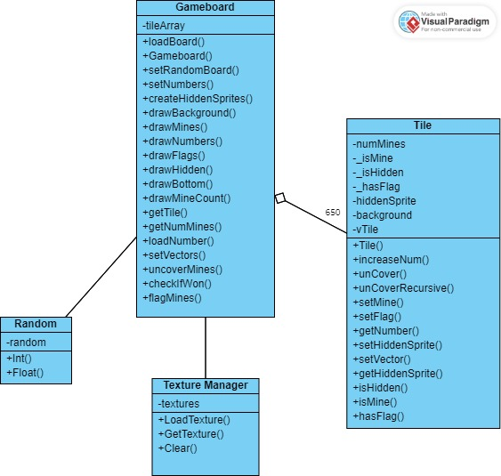
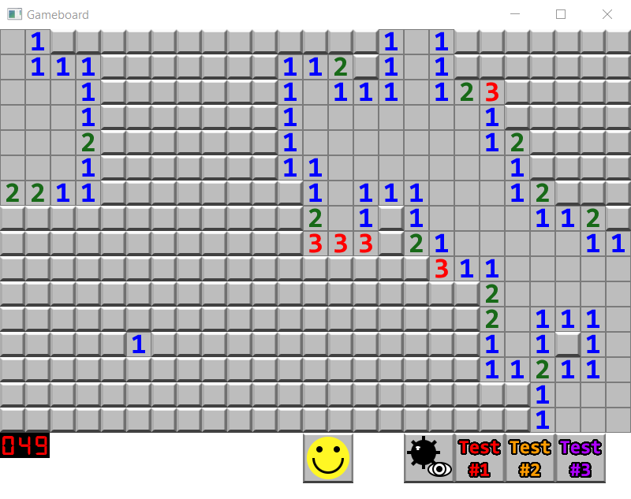
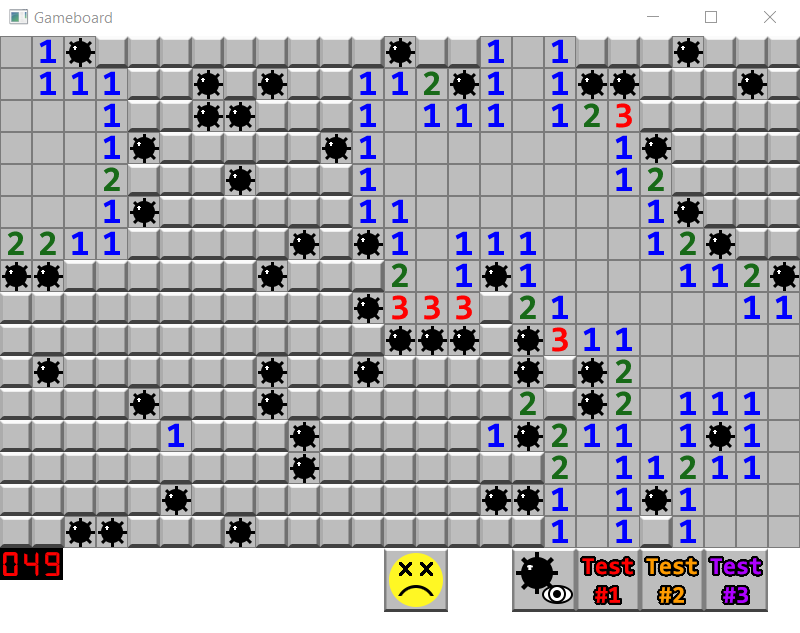

Reese Quinn
Minesweeper
The assignment for this project was to re-create the classic logic puzzle game Minesweeper using C++ and SFML.
SFML is essentially a hardware abstraction API.
Below is a UML class diagram for the project and screenshots of the finished product.


